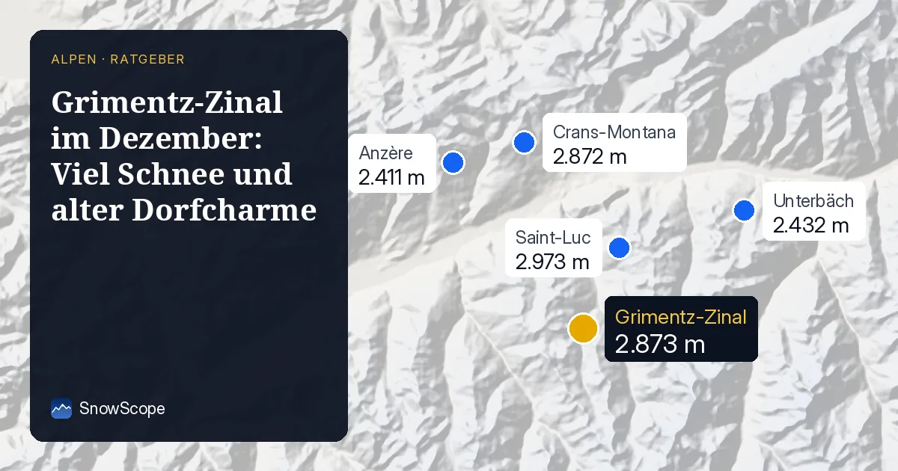

Grimentz-Zinal im Dezember: Viel Schnee und alter Dorfcharme
Grimentz und Zinal sind zwei historische Dörfer, die durch eine Seilbahn zu einem einzigen Skigebiet verbunden sind. Wenn Sie im Dezember 2026 eine günstige Reise suchen, bietet dieses Schweizer Ziel eine Mischung aus Höhenverfügbarkeit und traditioneller Atmosphäre.
Die Live-Schneeprognose für Grimentz-Zinal in der SnowScope-AppSchneehöhen, Pulverschnee-Alarme und 3D-Karte, gratis.
Zwei Dörfer, ein Skigebiet
Das kartierte Skigebiet umfasst 71 km Pisten und 23 kartierte Liftanlagen. Sie können sich dank des Seilbahnsystems ganz einfach zwischen den beiden Dörfern bewegen. Die Lifte erreichen einen höchsten Punkt von 2873 m, während der tiefste Lift auf 1552 m liegt. Das ergibt einen Höhenunterschied von 1321 m zum Erkunden.

Dezember-Schneehöhe nach Woche
Unsere Schnee-Historie von 46 vergangenen Wintern zeigt, dass der Schnee an den Liftstationen im Tal Anfang Dezember oft dünn ist. In einem gewöhnlichen Dezember hat das Tal 27 cm Schnee. Der Anteil der Winter mit 30 cm oder mehr an der Basis steigt jedoch im Laufe des Monats an und klettert von 17 % in der ersten Woche auf 63 % in der letzten Dezemberwoche.
Auf halber Höhe, auf 2212 m, sind die Bedingungen beständiger. Die übliche Dezember-Tiefe beträgt 44 cm. In 85 % der vergangenen Winter finden Sie zwischen dem 15. und 21. Dezember 30 cm Schnee oder mehr. Ganz oben an den Liften, auf 2873 m, ist der Schnee sehr zuverlässig. In 100 % der vergangenen Winter liegt dort Mitte des Monats 30 cm Schnee oder mehr.
Betrachtet man die langfristigen Trends, lag der Dezember-Durchschnitt ganz oben bei 99 cm in den ersten 15 Wintern von 1980-81 bis 1994-95 und bei 92 cm in den letzten 15 Wintern von 2011-12 bis 2025-26. Wir sehen auch, dass der schneearmste Dezember ganz oben mit 34 cm in der Saison 2015-16 verzeichnet wurde, während der schneereichste 175 cm im Jahr 1982-83 betrug.
Skipass-Preise
Sie können einen 1-Tages-Erwachsenenpass für das Val d'Anniviers für CHF 75,00 kaufen. Wenn Sie länger bleiben möchten, kostet ein 6-Tages-Erwachsenenpass für das Val d'Anniviers CHF 339,00. Diese Preise gelten für die Wintersaison 2026-27 und umfassen Grimentz-Zinal, St-Luc Chandolin und Vercorin.
Grimentz-Zinal im Vergleich zu St-Luc Chandolin
Im Vergleich dazu hat St-Luc Chandolin ein kartiertes Skigebiet mit 56 km Pisten und 18 kartierten Liften. Der höchste Lift liegt auf 2973 m, was höher ist als die 2873 m am höchsten Punkt von Grimentz-Zinal. Die übliche Dezember-Tiefe ganz oben in St-Luc Chandolin beträgt 110 cm, verglichen mit 99 cm in Grimentz-Zinal.
An der Basis liegt St-Luc Chandolin auf 1682 m und hat eine übliche Dezember-Tiefe von 38 cm. Die Basis von Grimentz-Zinal liegt tiefer bei 1552 m, was erklärt, warum der Schnee dort Anfang des Monats dünner ist. Beide Skigebiete haben dieselben Preise für den Val d'Anniviers-Pass.
Wer sollte es im Dezember wählen
Grimentz-Zinal ist eine gute Wahl, wenn Sie das Skifahren in großer Höhe mögen, wo der Schnee am sichersten ist. Stand 13. November 2026 beträgt der Schnee aktuell 0 cm an der Basis, 1 cm auf halber Höhe und 1 cm ganz oben. Die zweiwöchige Neuschneeprognose für die mittlere Lage und darüber sagt eine Spanne von 63 cm bis 108 cm voraus, mit einem Mittelwert von 86 cm.
Wenn Sie Anfang Dezember reisen, konzentrieren Sie sich auf die oberen Bereiche des Berges. Die unteren Pisten eignen sich besser für Wochen gegen Ende des Monats, wenn die Schneedecke mehr Zeit hatte, sich aufzubauen.
Tipps für Skifahrer
- Besuchen Sie das Gebiet in der letzten Dezemberwoche, um die besten Chancen auf 30 cm Schnee oder mehr an den Liftstationen zu haben.
- Verbringen Sie Ihre Zeit oben an den Liften auf 2873 m, wo der Schnee selbst in schneearmen Jahren zuverlässig ist.
- Prüfen Sie den Lawinenlagebericht, bevor Sie ins Gelände fahren, da sich die Bedingungen in großen Höhen schnell ändern.
- Buchen Sie Ihren 6-Tages-Pass für das Val d'Anniviers auf der offiziellen Website, um Ihre Reise vorzubereiten.
Weitere Karten (externe Seiten)
Quellen und Nachweise
- Val d'Anniviers tourism, official ski pass prices 2026-27 www.valdanniviers.ch/fr/Z33617/tarifs-ski-grimentz-zinal
- SnowScope, December snow at three heights and today's snow map snowscope.app/
Zu diesen Zahlen
Aktueller Schnee und Zwei-Wochen-Ausblick: SnowScope-Prognosen (Ausblick aus ECMWF und GFS, eine Spanne, kein Versprechen). Lifte und Pisten: OpenSkiMap-Kartierung. Preise: die offiziellen Seiten unten, gelesen am 2026-11-13; Preise können sich ändern, vor der Buchung prüfen.
Offizielle Lawinenlageberichte: SLF – WSL Institute for Snow and Avalanche Research
Diesen Bericht zitieren
Für Forschung, Lehre oder Presse: Zahlen und Grafiken sind unter CC BY 4.0 mit dieser Quellenangabe frei nutzbar.
SnowScope (2026), Grimentz-Zinal im Dezember: Viel Schnee und alter Dorfcharme, https://snowscope.app/blog/de/2026/11/grimentz-zinal-december-ski-snow-and-cost-2026.html, abgerufen am 2026-11-14
SnowScope (Atlas Labs). (2026, November 14). Grimentz-Zinal im Dezember: Viel Schnee und alter Dorfcharme. SnowScope snow reports. https://snowscope.app/blog/de/2026/11/grimentz-zinal-december-ski-snow-and-cost-2026.html
BibTeX
@misc{snowscope2026grimentzzinaldecemberski,
author = {{SnowScope (Atlas Labs)}},
title = {Grimentz-Zinal im Dezember: Viel Schnee und alter Dorfcharme},
year = {2026},
month = nov,
howpublished = {\url{https://snowscope.app/blog/de/2026/11/grimentz-zinal-december-ski-snow-and-cost-2026.html}},
note = {Published 2026-11-14 13:31 UTC; accessed 2026-11-14}
}· CC BY 4.0 · Methoden, Daten und Werkzeuge →
Grimentz-Zinal: Schnee und Temperatur nach Höhe, dieser Winter vs letzter (Werkzeuge) →
Grimentz-Zinal folgen
Gratis: eine Nachricht, wenn Neuschnee kommt, und jeden Morgen die Vorhersage.
Weitere Schneeberichte

Vergleiche die Schneechancen im Dezember und geprüfte Skipasspreise ab 40,00 EUR in italienischen Skigebieten für deinen Wochenendtrip mit dem Auto.

Unsere 46-Winter-Reihe in den Alpen, 108 Punkte von 667 bis 3.872 m: überall weniger Schneetage, deutlich an 81 %. Was sich je Höhe änderte und warum.